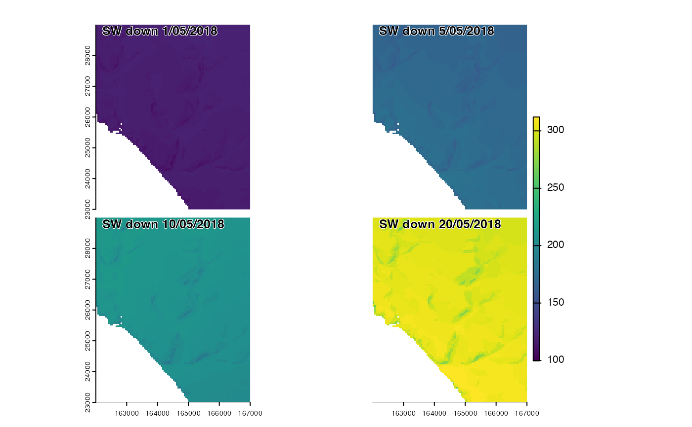
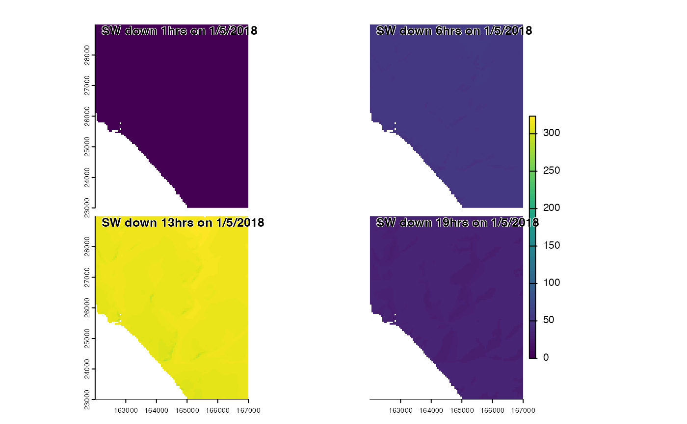

Downscales an array of shortwave radiation data with option to simulate cloud patchiness and calculate diffuse radiation
Usage
swdownscale(
swrad,
tme = NA,
dtmf,
dtmc,
patchsim = FALSE,
nsim = dim(swrad)[3],
hor = NA,
terrainshade = FALSE
)Arguments
- swrad
an array of shortwave radiation (W/m^2).
- tme
POSIXlt object of times corresponding to radiation values in
swrad.- dtmf
a fine-resolution SpatRast of elevations. Temperatures down-scaled to resolution of
dtmf.- dtmc
SpatRast of elevations matching the resolution, extend and coordinate reference system of of
swrad.- patchsim
optional logical indicating whether to simulate cloud cover patchiness during downscaling. More realistically captures variation, but slower.
- nsim
optionally the number of independent cloud cover patchiness simulations to perform. Outputs are temporally interpolated (see details).
- hor
optional 3D array or spatRaster of horizone angles
- terrainshade
optional logical indicating whether to adjust incoming radiation for terrain shading. If TRUE, total downward shortwave radiation is partioned into its direct and diffuse components, the latter adjusted by sky view and the former set to zero if the sun is below the horizon, which is computed explicitly.
Value
if terrainshade = FALSE a multi-layer SpatRast of total shortwave radiation
(W/m^2) matching the resolution of dtmf. If if terrainshade = TRUE a list of wrapped multi-layer
SpatRasts of (1) total direct and difuse shortwave radiation (W/m^2) and (2) diffuse-only radiation (W/m^2).
Details
radiation is downscaled by computing average fraction of clear-sky radiation
and then adjusting this variable to account for elevation using an emprical
adjustment calibrated against 0.05 degree data for the UK. If
patchsim is set to TRUE cloud cover patchiness is simulated the gstats package.
The parameter nsim determines the number of independent simulations and hence
the time intervals at which these simulations are performed. Simulated anomalies
due to local cloud patchiness are then interpolated temporally between these
periods. This ensures that, over shorter increments of say and hour, the location
clouds within each hour retain a degree of inter-dependence more realistically
simulating the trajectory of cloud as they move across the landscape.
Examples
climdata<- read_climdata(mesoclim::ukcpinput)
sw<-swdownscale(climdata$swrad,dtmf=terra::rast(system.file('extdata/dtms/dtmf.tif',package='mesoclim')), dtmc=climdata$dtm,terrainshade = TRUE)
sw<-sw$swf
terra::panel(c(sw[[1]],sw[[5]],sw[[10]],sw[[20]]),main=paste0("SW down ",c(1,5,10,20),"/05/2018"))

hrsw <- swrad_dailytohourly(climdata$swrad,climdata$tme,r=climdata$dtm)
hrswf<-swdownscale(hrsw,dtmf=terra::rast(system.file('extdata/dtms/dtmf.tif',package='mesoclim')), dtmc=climdata$dtm,terrainshade = TRUE)
terra::panel(c(hrswf$swf[[2]],hrswf$swf[[7]],hrswf$swf[[14]],hrswf$swf[[20]]),main=paste0("SW down ",c(1,6,13,19),"hrs on 1/5/2018"))
